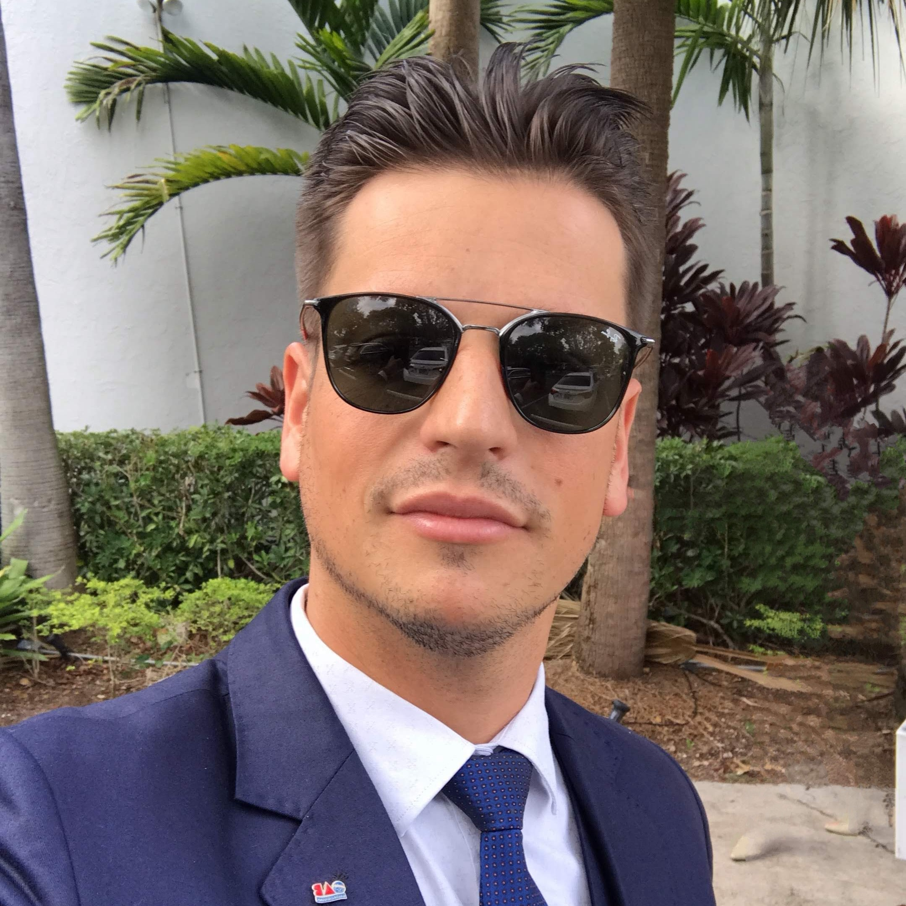

About Me
Klaus Moroni Alves
I am a Software develpment student, passionate about technology and seeking to improve my web development skills.
Skills and Projects
I have knowledge in HTML, CSS, and JavaScript, and I'm excited to apply these learnings to future projects.